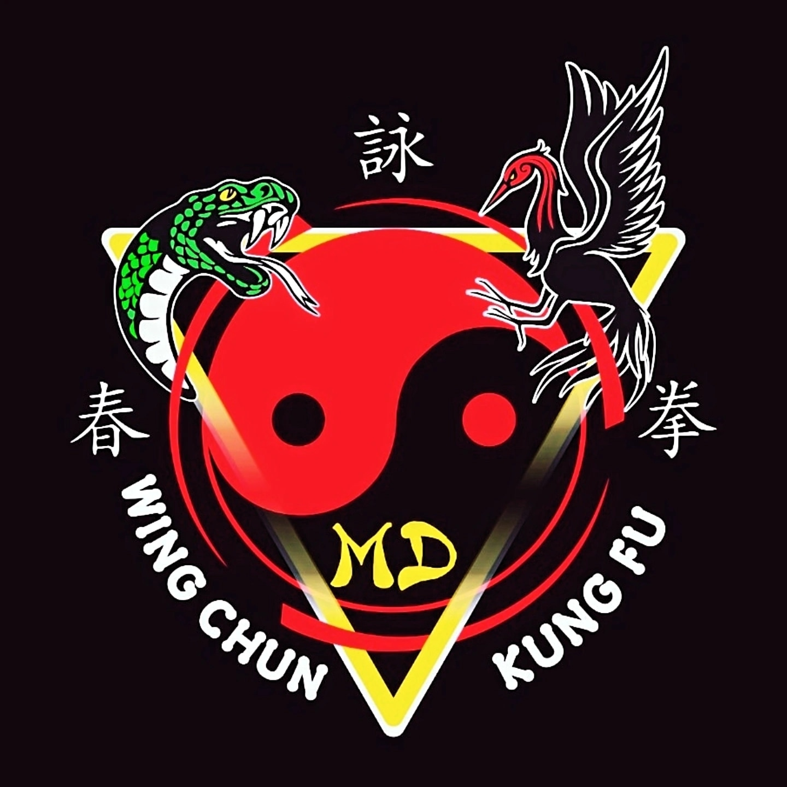
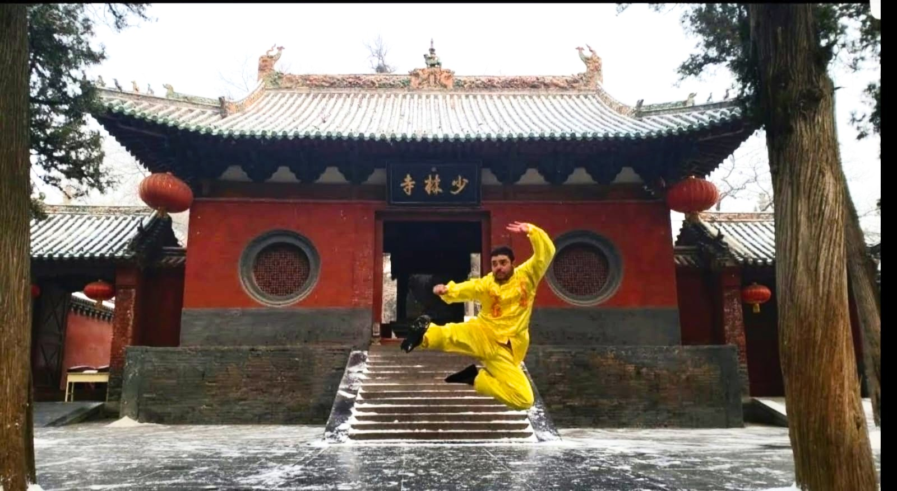
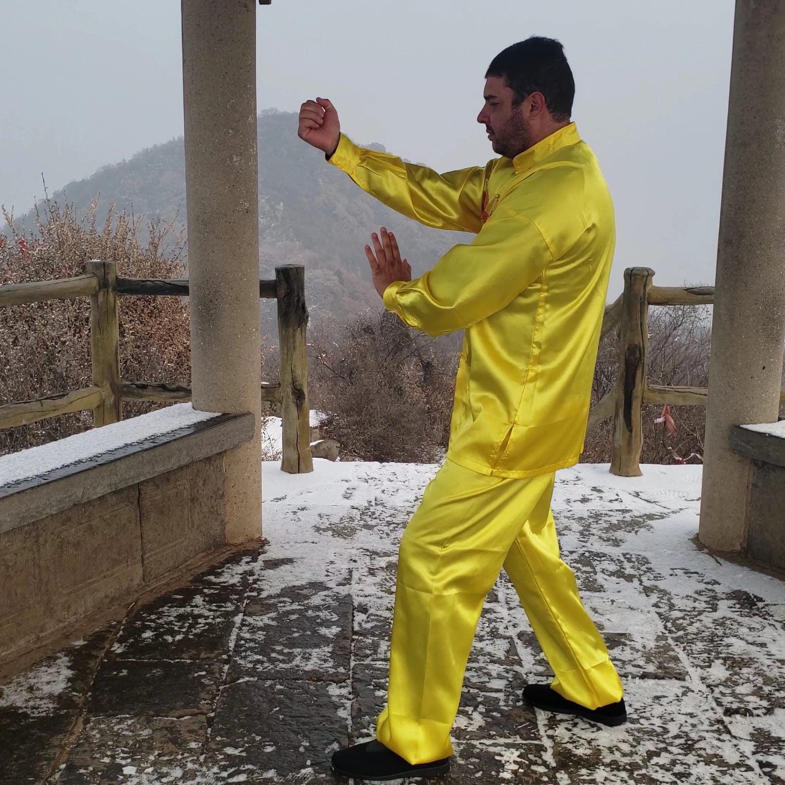
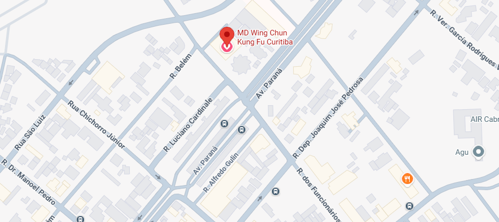

Deu início às artes marciais aos 9 anos no Judô. No ano de 1989, aos 12 anos, conheceu o Wing Chun numa academia do bairro de Bento Ribeiro, Rio de Janeiro, sob a instrução do Shifu Alan Rodrigues (aluno de Shifu Francisco D'Urbano, discípulo de Shifu Marco Natali, linhagem See Tiong Foo - Malásia)

Seguimos a linhagem tradicional de Ip Man. Nosso foco não é formar atletas de pódio, mas sim praticantes com capacidade real de defesa pessoal, controle emocional e estrutura física inabalável.
O treino combina o aprendizado das formas clássicas, condicionamento marcial de base e a prática intensa do Chi Sao (mãos coladas).
R. dos Funcionários, n° 805 - Cabral, Curitiba - PR, 80035-050

Venha conhecer o ambiente, sentir a dinâmica do treino e conversar pessoalmente com o Shifu. A primeira aula experimental é cortesia da casa.
Agendar Aula Experimental